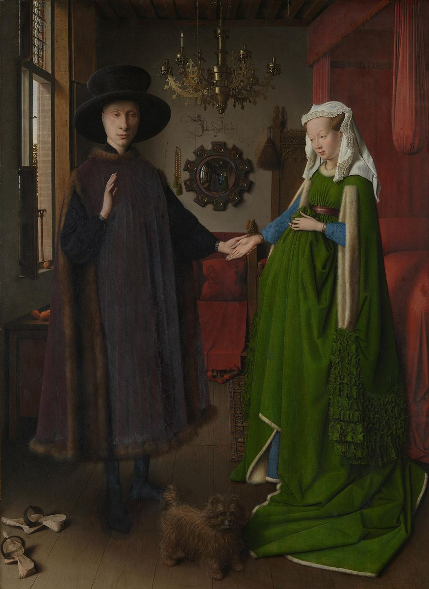

The Arnolfini Portrait

Palette
- Black · your word: Black
- Bistre · your word: Black
- Raw umber · your word: Umber
- Lincoln green · your word: Hunter green
- Dark sienna · your word: Mahogany
- Black olive · your word: Black
Van Eyck built color in layers of oil. The green dress is verdigris, a copper green: opaque layers first, then a glaze of verdigris in oil and pine resin for depth. The bed hangings are vermilion, red lake and red earth under red glazes. The man's tabard, now almost black, was once a dark crimson-purple. Two old varnish layers survive, and the lower one has yellowed.
Image
Wikimedia Commons · Public domain

Hex values are screen approximations. Every page lists its sources.